(2007-04-26 08:16:56)
【韶山映山红】当日大盘图。】
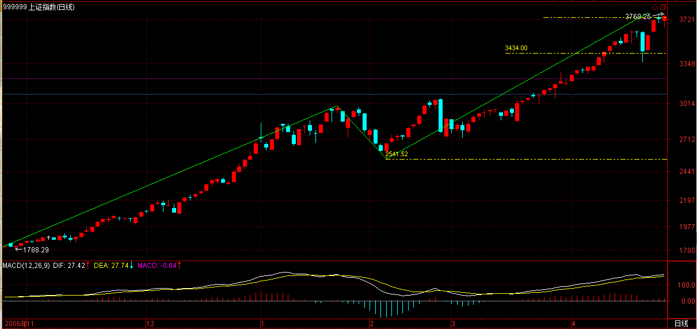
本周就不解《论语》了，并不是本ID不想写，而是51长假，对那些希望多学点本ID理论的人，是一个好的机会，本ID也就多写点这方面的，给有需要的多准备点，毕竟，这对于大多数人来说更迫切。
前面说了那么多情况，从实用角度，为了理清实际操作中的基本思路，先穿插这堂课。
一个人，拿着本来想去419的钱准备入市，那么，首先要明确，自己要按什么级别来操作，这个问题，前面已经反复说过了，不妨假设这级别是30分钟。那么，进到市场，打开走势图，首先要找什么？就是找当下之前最后一个30分钟中枢。【韶山映山红】当下、之前、最后一个。这个中枢已经形成。】
这其实对任何新进的股票，道理是一样的。例如，你出了某股票，重新选择一只新的，那就会面对相同的情况。【韶山映山红】这里没说要不要看当下所处的走势类型，只说最后一个中枢。】
显然，这将会出现三种情况：一、当下在该中枢之中。二、当下在该中枢之下。三、当下在该中枢之上。【韶山映山红】之中、之下、之上的界限是什么？★第一种情况能够确定中枢在延伸中，后两种情况的两小类，分别是没有第三类买卖点的中枢震荡a+A盘整背驰和有第三类买卖点的a+A+b盘整背驰。所以，三种情况划分的界线就是该中枢的中枢区间[ZD，ZG]。】
注意，这最后的30分钟中枢，是一定可以马上确认的，无须任何预测，当然，前提是你首先要把本ID前面说的理论学好，如果连中枢都分不清楚，那就没办法了。【韶山映山红】“当下之前最后一个30分钟中枢”，意味着这个中枢已经形成，也就是说，连续三个次级别走势类型的重叠已经形成，当然“一定可以马上确认的，无须任何预测”。】
第一种情况，显然，这中枢在延伸中，而后两种情况，分别可以用第三类买卖点分为两小类。【韶山映山红】第一种情况能够确定中枢在延伸中，后两种情况的两小类，分别是没有第三类买卖点的中枢震荡a+A盘整背驰和有第三类买卖点的a+A+b盘整背驰。所以，三种情况划分的界线就是该中枢的中枢区间[ZD，ZG]。】
对第二种，有1、当下之前未出现该中枢第三类卖点。【韶山映山红】a+A的某离开段。】2、当下之前已出现该中枢第三类卖点（正出现也包括在这种情况下，按最严格的定义，这最精确的卖点，是瞬间完成的，而具有操作意义的第三类卖点，其实是一个包含该最精确卖点的足够小区间）。【韶山映山红】a+A+b的某离开段，包括第一次离开后的返回状态。】
对于第三种，类似有1、当下之前未出现该中枢第三类买点。【韶山映山红】a+A的某离开段。】2、当下之前已出现该中枢第三类买点。【韶山映山红】a+A+b的某离开段，包括第一次离开后的返回状态。】
对于第一大类，【韶山映山红】当下在该中枢[ZD，ZG]之中。】因为在中枢里，由于这时候怎么演化都是对的，不操作是最好的操作，等待其演化成第二、三类，【韶山映山红】30分钟的操作级别，30分钟中枢延伸过程中，不离开中枢区间就不操作。如果是同级别分解的操作，不新低、新高或者盘整背驰的段都要操作。这里说的操作法要增加一个限制：不突破[ZD，ZG]的不操作。】
当然，如果你技术好点，可以判断出次级别的第二类买点，这些买点很多情况下都是在中枢中出现的，那当然也是可以参与的。【韶山映山红】“次级别的第二类买点”是哪个？★】
【韶山映山红】30分钟的操作级别，30分钟中枢后的当下，次级别当然是5分钟级别。5分钟走势类型的二买出现在什么地方，和30分钟中枢并没有什么关联。那么，这里说的次级别二买就应该是5分钟线段类走势形成的二买。如果后续的走势是向上形成30分钟中枢的三买，从多义性分析的角度，势必要走出一个5分钟级别的线段类上涨趋势，或者5分钟级别的线段类向上盘整，这个二买就很有价值了。当然，另一方面要警惕这种二卖的情况。中枢内二买。中枢内二卖。】
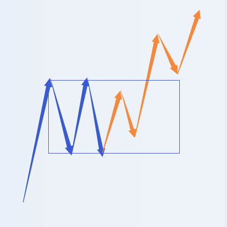
【韶山映山红】线段类趋势离开中枢，第一个线段类中枢在大中枢区间内部，就成为中枢内二买，或者中枢内二卖。后续的线段类中枢在大中枢区间之外，就会成为大中枢的第三类买卖点。】
【韶山映山红】中枢震荡中，不新低或盘整背驰就可以成为第二类买卖点。那么，什么样的中枢内二买可能走出线段类趋势？之前有过一次线段类盘整背驰之后的不新低？★以后研究。】
但如果没有这种技术，那就有了再说了。
只把握你自己当下技术水平能把握的机会，这才是最重要的。
【韶山映山红】对于第一大类：１，不操作。等待其演化成第二、三类。２，技术好的，参与次级别的第二类买点，埋伏一个次级别的向上离开段的线段类走势。】
对于第二种第1类，【韶山映山红】当下在该中枢[ZD，ZG]之下。当下之前未出现该中枢第三类卖点。】由于中枢震荡依旧，因此，先找出该中枢前面震荡的某段，与之用类似背驰比较力度的方法，用MACD辅助判断，找出向下离开中枢的当下该段走势，看成背驰判断里的背驰段，然后再根据该段走势的次级别走势逐步按区间套的办法去确定尽量精确的买点。【韶山映山红】中枢震荡的离开段的盘整背驰的买点。中枢延伸还没有结束，所以这个买点是低级别打短差的买点。】
注意，用来比较的某段，最标准的情况，当然是前面最近向下的，【韶山映山红】除了“前面最近向下的”，还有谁？★可以做个专题，以后研究。】可以是前面形成DD、GG的离开段，还可以是中枢的进入段。】
一般情况下，中枢震荡都是逐步收敛的，这样，如果继续是中枢震荡，后面的向下离开力度一定比前一个小。【韶山映山红】中枢震荡的标准走势是“逐步收敛”。】
【韶山映山红】振荡函数。振幅的衰竭源于阻尼。】
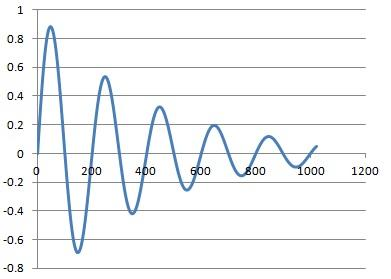
当然，还有些特殊的中枢震荡，会出现扩张的情况，就是比前一个的力度还要大，【韶山映山红】这里的“扩张”是指喇叭形扩散形态的中枢延伸震荡。】
【韶山映山红】振荡函数。振幅加大的原因是什么？★以后研究。】
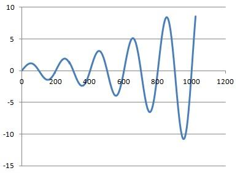
但这并不必然就一定会破坏中枢震荡，最终形成第三类卖点，【韶山映山红】离开段力度增大，却继续维持中枢延伸。】这个问题比较复杂，在后面谈论中枢的各种图形形态时，才能详细说到。【韶山映山红】中枢的各种图形形态。可以做个专题。以后研究。★★★】一般来说，这种情况，用各种图形分解与盘整背驰的方法就可以完全解决。【韶山映山红】都包括哪些“图形分解”？★以后研究。】同级别分解？多义性重新组合？】
【韶山映山红】对于第二种第1类：降低级别，利用中枢震荡打短差。】
【韶山映山红】若禅精舍（陈秋明）注：
第二种第一类，30分钟中枢已经存在，当下走势在向下离开中枢的5分钟走势段形成中或刚好已经形成，这时的这个离开段，由于不包含对中枢的第三卖点，所以只能作为该中枢的次级震荡来看待。那么要关注的，就是该离开段是否背驰，该背驰的同向对比走势段，可以是最近的一个，也可能是前面的某一个。
对于一些下跌后接着盘整的走势，如上图83之前并没有明显的回升段，一般都是用88之后的走势，与86-87比较，这相当于是中枢震荡过程中的相邻同向同级别走势段的盘整背驰比较，在同级别分解那几个章节中有很清楚的论述。
而如果实际图形是这样的，上图从82开始有个明显的回升段，然后才是30分钟中枢，那么通常用来对比的，是88之后的走势段与82-83对比，也就是围绕中枢来比较力度，当然在此之外，也可以和86-87对比，两种比较方式中有任何一种盘整背驰，都要考虑回拉中枢的可能。
中枢震荡的形态，通常是收敛的，也就是次级别的震荡一段比一段的空间短，而上图中的中枢震荡，就属于扩张型的，可以看到每段次级别的高低点是从后面向前面包含的。这种情况由于每一段次级别震荡段，一般都不会是盘整背驰段，所以对中枢震荡的把握要复杂一些，像上图87-88段就比85-86段的力度要大，但这种扩张并不一定会造成走势对中枢的离开。一定要操作的话，如果是同级别分解的，那么只需要关心当下这段走势就可以了，前面的走势可以不用关心，常规的操作可以放弃这一段的第一类买点，在第一类买点出现后，通过可靠的第二买点介入，这时因为已经有第二买点了，所以前面已经出现的第一类买点已经足够清楚，只是这种介入要注意第二买点的位置，防止将第三卖点误判成第二买点。
文中提到的各种走势的分解和盘整背驰，是将该中枢之前的走势包含进来考察，由于走势有多义性，所以可以通过不同的组合，来考察该段在不同组合中的位置和力度，属于比较复杂的方法了。】
对于第二种第2类，【韶山映山红】当下在该中枢[ZD，ZG]之下。当下之前已出现该中枢第三类卖点。】由于该中枢已经结束，那就去分析包含该第三类卖点的次级别走势类型的完成，用背驰的方法确定买点。【韶山映山红】a+A+b的b，a+A+b+B+c的c。真正的盘整背驰或趋势背驰的第一类买点。】“包含该第三类卖点的次级别走势类型”是指第三类卖点之后的再次离开段？还是整个离开段？以后研究。】
当然，还有更干脆的办法，就是不参与这种走势，因为此后只能是形成一个新的下跌中枢或者演化成一个更大级别的中枢，那完全可以等待这些完成后，再根据那时的走势来决定介入时机。【韶山映山红】如果是趋势背驰的最后一个中枢，这样实际上放弃了可能的一买，实际上也放弃了二买，只能等三买。★以后研究。】
这样，可能会错过一些大的反弹，但没必要参与操作级别及以上级别的下跌与超过操作级别的盘整，这种习惯，必须养成。【韶山映山红】“超过操作级别的盘整”包含了若干段操作级别的上涨，也放弃？从更大级别看，所有走势都是盘整，那么，什么级别的盘整可以参与、什么级别的盘整不参与，根据什么来确定呢？★能够当下划分出操作级别走势类型的盘整可以参与，不能当下做出划分的就要躲开。以后研究。】
【韶山映山红】对于第二种第1类：１，操作，真正的盘整背驰或趋势背驰的第一类买点。２，不操作。宁可“错过一些大的反弹”，也不参与可能的“操作级别及以上级别的下跌与超过操作级别的盘整”。】
【韶山映山红】若禅精舍（陈秋明）注：
这一段可能很多人不理解，为什么“此后只能是形成一个新的下跌中枢或者演化成一个更大级别的中枢”，这是有盘整背驰后走势演化的必然性导致的，aAb结构中，当第三买点出现，后面的次级别走势要么和b盘整背驰，要么不是盘整背驰，前者对应这中枢A的扩展，后者对应着新的中枢B的形成。在30分钟操作级别中，这两种情况都是不参与的。】
对于第三种第1类，【韶山映山红】当下在该中枢[ZD，ZG]之上。当下之前未出现该中枢第三类买点。】这时候不存在合适的买点，等待。【韶山映山红】“等待”：不出现三买回到中枢变成第一种，或者出现三买变成第三种第2类。】
对于第二种第2类，【韶山映山红】此处笔误，应该是第三种第2类。当下在该中枢[ZD，ZG]之上。当下之前已出现该中枢第三类买点。】如果离该买点的形成与位置不远，可以介入，但最好就是刚形成时介入，若一旦从该买点开始已出现次级别走势的完成并形成盘整顶背驰，后面就必须等待，因为后面将是一个大级别盘整的形成，按照上面的习惯，可以不参与的，等待该盘整结束再说。【韶山映山红】中枢三买后形成的大级别盘整意味着至少有三段次级别的盘下，先躲过再说。】
【韶山映山红】这里是第三个“盘整顶背驰”。前面两个“盘整顶背驰”都是线段类走势之后形成中枢，是中枢的进入段和离开段对比的盘整背驰，虽然离开段没有三买，但还是要形成更大级别的盘整，成为趋势+盘整的组合。这里讲的是大中枢在三买出现以后，“已出现次级别走势的完成”，“并形成盘整顶背驰”，然后说“后面将是一个大级别盘整的形成”，由此可知，次级别走势完成的时候，没有形成趋势的条件，也就是说，这时候要么没有新高，要么新高但a+A+b盘整背驰。所以这个盘整顶背驰可以视为a+A+b盘整背驰。★以后研究。】
当然，如果整个市场都找不到值得介入的，而又希望操作，那么就可以根据这些大点级别的中枢震荡来操作，这样，也可以获得安全的收益。【韶山映山红】有可能要降低操作级别才有操作机会。】
【韶山映山红】对于第三种第1类：等待。】
【韶山映山红】对于第三种第2类：能介入三买就介入，不能介入三买就等待。】
【韶山映山红】若禅精舍（陈秋明）注：
第三种第一类，当下走势在中枢上但是还没有出现第三买点，那么当下处于一个次级别段向上离开中枢的过程中，这时最多存在该次级别的第二和第三买点，对操作级别来说不存在买点。而第二类，是第三买点构造完成后的走势，这可以分为当下刚好完成第三买点、当下在第三买点后上涨不远处、第三买点后已经上涨完成。第一种和第二种当然是可以参与的，但第三种第三买点后的次级别上涨已经完成，那么该完成的次级别上涨，相对于离开段就有了背驰或不背驰的分类。背驰的情况下，后续将把前一个中枢进行扩展，不背驰的情况下就是在该次级别上涨结束为止，原中枢上方构造第二个中枢，前者面临着中枢扩展，后者面临着中枢震荡，对于30分钟操作级别来说原则上都是不参与的。但新的30分钟中枢震荡，或者扩展出来新的大级别中枢的c段结束，是可以参与的，但前者就是按五分钟来操作，后者要考察日线中枢三个次级别段的力度是否盘整背驰。】
上面已经把一个固定操作级别的可能操作情况进行了完全分类与相应分析，显然，对于一个中枢来说，最有价值的买点就是其第三类买点以及中枢向下震荡力度出现背驰的买点。【韶山映山红】30分钟操作级别，实际的买卖操作是5分钟的一段，包括三买点到盘整背驰点的一段，包括30分钟中枢震荡的盘整背驰的低点反弹的一段。★】
前者，【韶山映山红】指“其第三类买点”。】最坏的情况就是出现更大级别的中枢，这可以用其后走势是否出现盘整背驰来决定是否卖出，【韶山映山红】三买点介入后，遇盘整背驰卖出。】一旦不出现这种情况，就意味着一个向上走势去形成新中枢的过程，这种过程当然是最能获利的。【韶山映山红】三买点之后，一旦不出现盘整背驰的情况，就意味着中枢向上移动，要走成一个趋势了。】
至于后面一种，【韶山映山红】指“中枢向下震荡力度出现背驰的买点”。】就是围绕中枢震荡差价的过程，这是降低成本、增加筹码的。【韶山映山红】这里讲的是中枢操作，所以不提趋势背驰的情况。】
注意，一定要注意，很多人不知道怎么去弄差价，似乎所有机会都可以去弄。但如果从最严格的机械化操作意义上说，那么只有围绕操作级别中枢震荡的差价才是最安全的，因为肯定能做出来，而且绝对不会丢失筹码。【韶山映山红】这里说的“怎么去弄差价”，不是上文的“中枢向下震荡力度出现背驰的买点”，而是同样原理的卖点先卖，然后在“中枢向下震荡力度出现背驰的买点”后买。实际上是利用现有持股做空，所以要解决最担心的丢失筹码的问题。】在成本为0后的挣筹码操作中道理是一样的。【韶山映山红】“挣筹码操作”也是先卖后买。】
也就是说，在确定了买卖级别后，那种中枢完成后的向上移动时的差价是不能做的，中枢向上移动时，就应该满仓，这才是最正确的仓位。【韶山映山红】三买后的向上段没有盘整背驰就不要动。】
而在围绕中枢差价时，在中枢上方仓位减少，在中枢下方仓位增加，注意，前提是中枢震荡依旧，一旦出现第三类卖点，就不能回补了，【韶山映山红】前面低点回补了，三卖点出掉，然后的低点“就不能回补了”。这里说的是“围绕中枢差价时”，所以不考虑盘整底背驰的买点。】用中枢震荡力度判断的方法，完全可以避开其后可能出现第三类卖点的震荡。【韶山映山红】三卖点之前的那个下跌有什么特征？★和前一段比较、和前面已经形成DD的离开段比较、和中枢进入段比较，没有盘整背驰。★★★以后研究。】
【韶山映山红】若禅精舍（陈秋明）注：
短差，原则上都是在中枢震荡的过程中操作，对三十分钟级别走势来说，一个五分钟级别顶底背驰，都容易引发三十分钟中枢的生成。如果前面是一个三十分钟的下跌趋势，那么回升的第一次级别段五分钟上涨结束后，基本上都对应着三十分钟中枢的出现。还有就是三十分钟第三买点之后的上涨，包含第三买点的b段出现顶背驰的时候，就是第二个中枢出现的时候，当然前提是b段不能是背驰段，如果是背驰段，那中枢就要扩展了。走势，在这样的分类中，当下处于什么阶段，要如何安排后续的操作，都是非常清晰的事情。】
那么，如果这个中枢完成的向上移动出现背驰，就要把所有筹码抛出，因为这个级别的走势类型完成，要等待下一个买点了。【韶山映山红】操作级别的背驰，清仓。“中枢完成的向上移动”是指第三类买点之后的向上段，这个背驰是指a+A+b盘整背驰，或者a+A+b+B+c趋势背驰。】
如果不背驰，就意味着有一个新中枢的形成，【韶山映山红】“这个中枢完成的向上移动”不背驰。】注意，小级别转大级别其实并不复杂，一样可以看成一个新中枢，【韶山映山红】趋势后面的中枢更可能是小转大形成的。】只是该中枢有可能和前面的重合，而趋势中是不可能出现的。【韶山映山红】趋势中不可能出现两个中枢重合，出现了，趋势就变更大级别的盘整了。】
该中枢，就可以继续用中枢震荡的方法短差，【韶山映山红】也就是说，对固定操作级别的来说，不做升级处理，也不做同级别分解那样的重新组合成三个中枢，而是假装这两个中枢就是趋势的两个中枢，“继续用中枢震荡的方法短差”。★】然后再继续中枢完成向上移动，直到移动出现背驰。【韶山映山红】a+A+b+B+c不背驰，而小转大，就会（a+A+b）+（B+c+C）或者（a+A+b+B+c）+C，对固定操作级别的来说，不做（B+c+C）的升级，那么都是a+A+b+B+c+C。】
【韶山映山红】若禅精舍（陈秋明）注：
小转大看成是一个新中枢的视角，只适用于零成本操作的过程中。对于短线而言，由于小转大的顶点位置，并不是大级别的背驰段，也就是产生小转大的这个次级别走势力度很强。如果要和前面的中枢进行重叠，价格已经跌下来很多了，对于操作而言早该走掉了，后面是不是看成是中枢震荡都没有关系了。
但对零成本操作的方式而言，小转大无非就是小级别的顶底背驰，所匹配的资金在当下就已经跟随小级别的买卖点操作了，后面的震荡当然可以作为中枢震荡来操作。】
其实，可以用严格的方法证明
缠中说禅第一利润最大定理：对于任何固定交易品种，在确定的操作级别下，以上缠中说禅操作模式的利润率最大。
该模式的关键只参与确定操作级别的盘整与上涨，对盘整用中枢震荡方法处理，保证成本降低以及筹码不丢失（成本为0后是筹码增加，当然，对于小级别的操作，不会出现成本为0的情况），在中枢第三类买点后持股直到新中枢出现继续中枢震荡操作，中途不参与短差。最后，在中枢完成的向上移动出现背驰后抛出所有筹码，完成一次该级别的买卖操作，等待下一个买点出现。【韶山映山红】“中枢完成的向上移动”
【韶山映山红】这里，是“中枢移动”的第一次登场。没有使用“中枢移动”这个词，也没有做精确的定义。知道打短差是怎么回事的，都可以看明白意思吧？】
这里必须注意，中枢震荡中出现的类似盘整背驰的走势段，【韶山映山红】“类似盘整背驰的走势段”，没叫做背驰段。】与中枢完成的向上移动出现的背驰段是不同的，两者分别在第三类买点的前后，在出现第三类买点之前，中枢未被破坏，当然有所谓的中枢震荡，其后，中枢已经完成就无所谓中枢震荡了，所以这问题必须清楚，这是有严格区分的，不能搞糊涂了。【韶山映山红】可以分别称为中枢震荡盘整背驰、中枢a+A+b盘整背驰。】
还有，在中枢震荡中，本质上是应该全仓操作的，也就是在中枢上方全部抛出筹码，在下方如数接回，当然，这需要高的技术精度，如果对中枢震荡判断错误了，就有可能抛错了。
所以对不熟练的，可以不全仓操作。但这有一个风险，就是中枢震荡后，不一定就能出现第三类买点，可以直接出现第三类卖点就下跌，这在理论与实际中都是完全允许的。这样，如果在中枢震荡上方没完全走掉，那有部分筹码就可能需要在第三类卖点处走，从而影响总体利润。
如果完全按照以上缠中说禅操作模式，就不存在这个问题了。至于能否达到这缠中说禅操作模式的要求，是技术精度的问题，需要在实际中磨练的问题。
【韶山映山红】若禅精舍（陈秋明）注：
中枢震荡的全仓操作，指的至少是30分钟级别，或者是操作级别的次级别。如果是按30分钟级别操作的，那么30分钟的中枢震荡就可以上下短差，依据的买卖点是五分钟级别。而如果是按五分钟操作的，五分钟中枢震荡的买卖点依据就是一分钟级别，这时就要考虑资金进出问题了。
比较好的级别是日线级别，或者以笔线段为递归标准的30分钟级别。这样的话，中枢的上下震荡一般都会有三五根或以上的日K线，空间一般都在十个百分点左右，这样全仓起来才有意义，否则级别小了都是两三个点的空间还去全仓进出就没必要了。】
当然，有一种磨练方式是可行的，就是宁愿抛错了，也要严格按方法来，毕竟就算你的技术判断能力为0，抛错的几率也就是50%，后面还有一个第三类买点可以让你重新买入，如果抛对了，那可能每次的差价就是10%以上，别小看这中枢震荡的力量，中枢震荡弄好了，比所谓的黑马来钱快而且安全，可操作的频率高多了，实际能产生的利润更大。【韶山映山红】线段类盘整背驰就卖。“宁愿抛错了，也要严格按方法来，”属于左侧交易。躲过第三类卖点的损失，可以由第三类买点救场。】
【韶山映山红】若禅精舍（陈秋明）注：
实际操作中，有很多可以用来辅助判断的工具，供中枢震荡的顶底判断使用。而这些不同工具在不同级别的意义，以及与走势结构和力度的配合，是最考较功夫的地方。熟悉每一个工具的优劣和适用范围，临盘时能够本能的去察觉和利用，是一个成熟操作者的基本功。】
以上的方法是对固定操作品种来说的，也就是不换股。还有一种更激进的操作方法，就是不断换股，也就是不参与中枢震荡，只在第三类买点买入，一旦形成新中枢就退出。
例如操作级别是30分钟，那么中枢完成向上时一旦出现一个5分钟向下级别后下一个向上的5分钟级别走势不能创新高或出现背驰或盘整背驰，那么一定要抛出，【韶山映山红】中枢完成，离开段走出了线段类上涨趋势，一旦背驰，就抛出。】为什么？因为后面一定会出现一个新的30分钟中枢，用这种方法，往往会抛在该级别向上走势的最高点区间。
当然，实际上能否达到，那是技术精度的问题，是需要干多了才能干好的。
其实，同样可以用严格的方法证明缠中说禅第二利润最大定理：对于不同交易品种交易中，在确定的操作级别下，以上激进的缠中说禅操作模式的利润率最大。
【韶山映山红】若禅精舍（陈秋明）注：
只参与某个固定级别的第三买点，是理论效率最高的操作，但需要市场环境的配合。弱市里面很多第三买点并不能走出理想的走势，甚至有些在构造中就可能受指数的影响而夭折。不同的操作策略要去匹配相应的环境，就好像看历史事件和观点，必须放在当时的历史条件下去看一样，这种思维方式是一种辩证，一根筋的最大特点就是一个观点走到黑，那样是不会有大成就的。】
注意，并不是说第二定理就比第一定理更牛更有意义，这里所说的利润率，是指每次操作的平均利润/需要占用资金的平均时间，但，真正能产生总体利润的，还与操作的频率有关，第二虽然激进，但也需要有激进的市场机会，如果这市场就没有可操作级别的第三类买点，那也只能干等，而第一不需要这么强的市场条件，基本上，除了最恶劣的连续单边下跌、连大点的中枢都没有的，都可操作，所以在实际操作中，两者不能偏废。
显然，对于大资金，以上的方法需要有特殊的处理，资金越大，利润率显然越低，因为很多级别的操作不可能全仓参与，就影响资金的总体利用率。
一般来说，小资金增长可以极为迅速，用本ID的方法，无论牛市熊市，最笨的人，完全随机挑股票，完全找不到所谓的黑马，每年保持200%以上利润是一点问题都没有。
如果你技术精度高，即使在熊市里，每年来个500%的增长，也是不难的，因为熊市里，中枢震荡的机会反而多，而且大反弹，本质上也就是大级别中枢震荡的机会不少，处理好了，并不比牛市来钱慢。
但这种增长只能维持几年，一旦资金大到一定程度，就会遇到资金增长瓶颈。如何突破该瓶颈，这是另一个问题，以后会说到。
【韶山映山红】若禅精舍（陈秋明）注：
大概所有学缠的人，都会被这200%和500%的年利润所执迷，这也并不是不可能做到，而是理想丰满与现实骨感的分野，现实的骨感在于很多人并没有那么多耐心去按照固定模式去操作。奇怪的就在这里，很多人好像抱着赚钱的目的来股市，也明明知道按理论操作可以赚钱，但心里想的、手上做的，却往往与之相悖。这大概是人类最有意思的地方。
股市不是游戏，无法去存档，也无法重新载入，亏了的就是亏了。这也是员工与老板的区别，当然也是人类社会结构的必然，员工可以磨洋工，反正到月发工资，而老板每一个决策的后果都要自己去承担，错了就是真金白银扔出去，对了还要考虑下个月工资是否够发，所承受的压力和思考问题的角度，与员工都是天壤之别。可能很多炒股的人都不是老板角色，缺少每一笔投资都要慎重考虑的本能，将员工的思维方式带到股市里面来，这样的结果就是万劫不复。】
【韶山映山红】程老湿爱吐槽 微博 2019-03-15 08:11 ：
你适合“打移动靶”还是“打固定靶”？
一般股民讲的短线长线投机投资，其实是同一种区分，但这些描述并不准确。
科普一点的说法就是低频交易和中高频交易的区别，或者说低换手和高换手的区别。
形象一点的说法就是你更喜欢打移动靶，还是习惯打固定靶。
移动靶，顾名思义，鸟嘛，都是在快速移动中，你也肯定是不断换位来获取最佳射击角度。
所以很多人认为的每日复盘功课，就是在盘面上找鸟的过程，而且是找那些刚刚起飞还没有飞出射程的鸟。
你每天做这些事，就说明你在专注打移动靶。
固定靶，也就是靶位一直在那里。你自己或许动态或许静态，但目标始终锁定，不会随意更换。
你每天所做的更多是“反复确认”。确认你选择目标的理由（逻辑）还在不在，有没有变化。
只要你的观察视野没有出现大范围移动，就说明你在专注打固定靶。
从我的描述中，大家应该发现，这是侧重点完全不同的两项运动。同样是跑步，百米跨栏和马拉松肯定还是有很大区分的。
可是你见过百米跨栏运动员和马拉松运动员互相嘲笑对方吗？嗯，这就是蠢。
专注很重要，“了解自己所做的事究竟是什么”更重要。隔行如隔山，每一个细项分支都有做得好的人，需要把握的技巧侧重也不同，而不是一概而论。
当然，无论选择打移动靶还是打固定靶，都不存在“简单”两个字。这就是你想多了。
很多奇奇怪怪的言论只是幸存者偏差导致的“幼稚”。】
附录：
【韶山映山红】2007-4-26 15:21。】
大盘今天又是一个典型的平衡市，高低都在前三30分钟K线出现，这种走势的处理很简单，就不多说了。
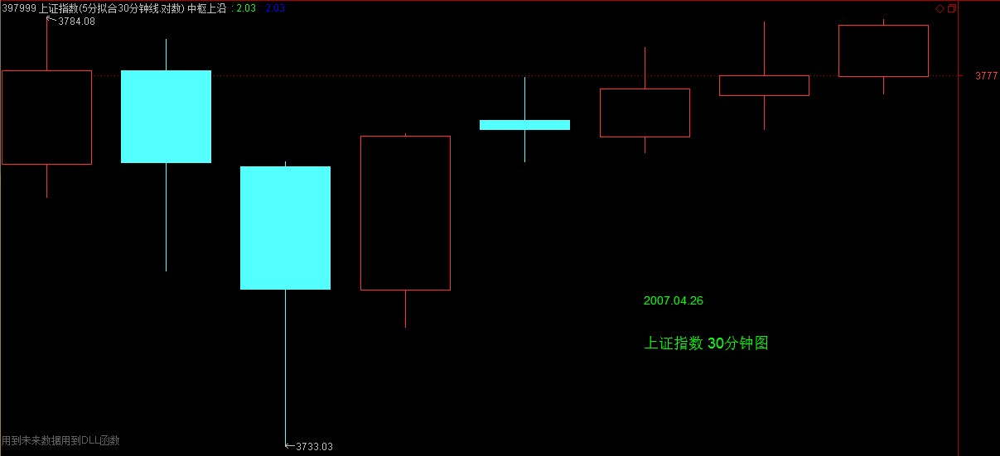
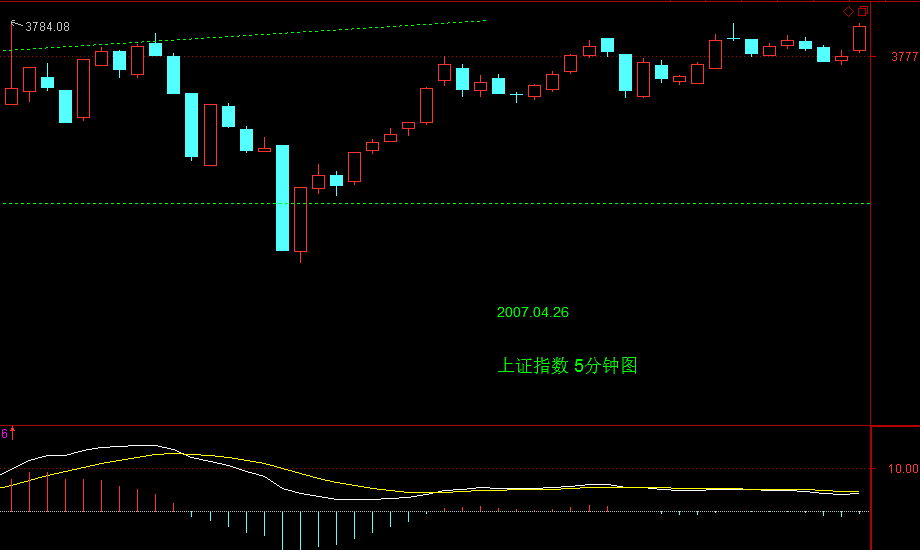
明天只要能站稳3745，就继续向上发展，【韶山映山红】中枢ZG点。】
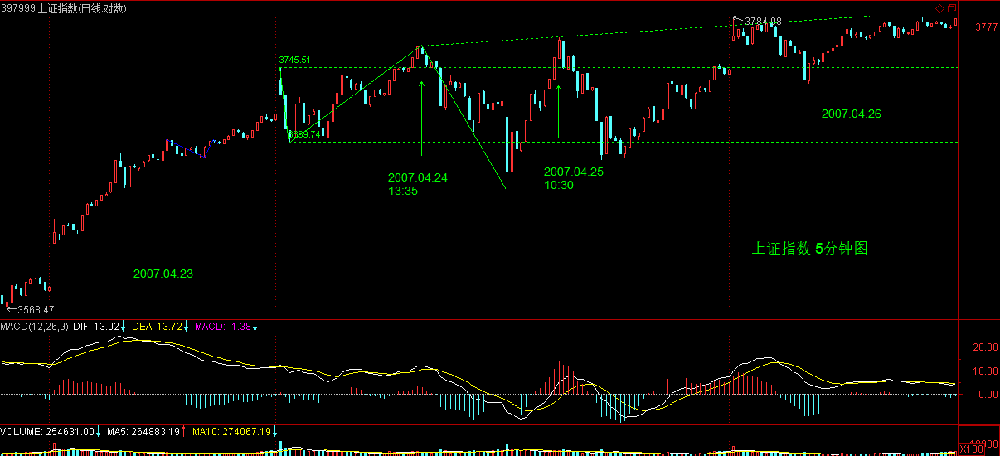
现在这种5日线都不破的走势，确实没有什么可说的。
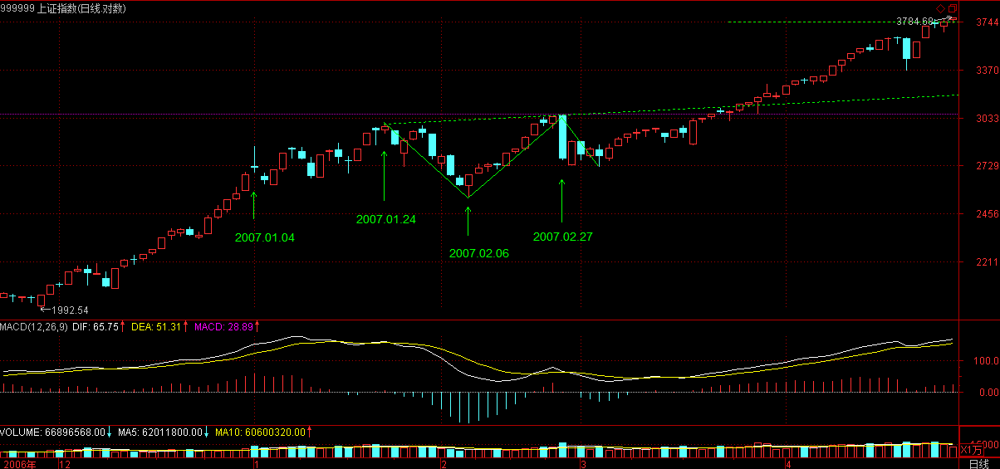
说实话，本ID现在就想放假了，那交易所也够混的，下周一还单独开一天，这样周线上就有一个量特别小，看起来一点都不美观，还不如明天结束，7号开盘。你说你还开盘，本ID又不能离开，免得被人捣乱，大概很多人都有这种想法，简直无聊透了。
今天有空，可以研究一下上面的文章，真掌握了，就算初步有点结果了。本ID马上要去中关村谈件VC方面的事情，约好4点，不能不走，晚上回来回答问题。
9点再见。
下午收盘再把今天走势分析附录上。
先下，再见。
2007-4-26 08:19
大盘今天又是一个典型的平衡市，高低都在前三30分钟K线出现，这种走势的处理很简单，就不多说了。明天只要能站稳3745，就继续向上发展，现在这种5日线都不破的走势，确实没有什么可说的。
说实话，本ID现在就想放假了，那交易所也够混的，下周一还单独开一天，这样周线上就有一个量特别小，看起来一点都不美观，还不如明天结束，7号开盘。你说你还开盘，本ID又不能离开，免得被人捣乱，大概很多人都有这种想法，简直无聊透了。
今天有空，可以研究一下上面的文章，真掌握了，就算初步有点结果了。本ID马上要去中关村谈件VC方面的事情，约好4点，不能不走，晚上回来回答问题。
9点再见。
2007-4-26 15:21
[匿名] 新年好 2007-04-26 21:17:04
明天只要能站稳3745，就继续向上发展
----------
请问缠姐，这里的3745是怎么看的，我看是好像是昨天的收盘前一分钟的价。是这样吗？
==
中枢上沿。
2007-4-26 21:21
[匿名] 傻子 2007-04-26 21:17:56
老师还没来，是不是今天谈得不太顺利啊
==
对不起，回来晚了。
2007-4-26 21:22
[匿名] touchnet 2007-04-26 21:14:33
新浪这字太小，老大要保护好视力啊！
==
右下脚应该有放大比例，150%看就可以了。
2007-4-26 21:24
[匿名] 新浪网友 2007-04-26 21:05:50
老大好，利物浦前景不容乐观，您什么时候也象阿布那样搞支足球队，横扫足坛无对手？
==
本ID有朋友搞的球队现在就在中超，一直抗着，简直就是活受罪。
2007-4-26 21:30
[匿名] 飞 2007-04-26 21:26:43
感谢博主!今天这一课讲的好啊!比较贴近实际操作好理解一点.请问博主,像今天的000625的一分钟级别开盘时冲到了17.05,而且红柱也比前面的放大了,为什么就下来了啊?像这种小级别的情况如何打短差啊?希望博主能回答,感觉这种情况很常见啊!
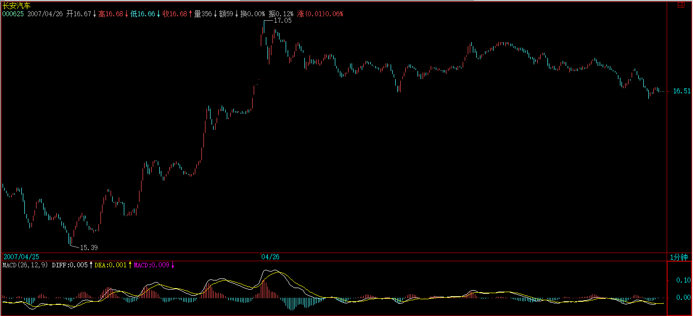
==
首先要搞清楚自己的操作级别，如果是小级别的操作，例如这股票，你看看15分钟图。
一般来说，只看柱子面积，不看黄白柱的，都是代表着相应小级别的比较，你看两者的面子谁大。【韶山映山红】长时间的缓慢拉升制造出大面积，短时间的快速拉升反而力度不足。】
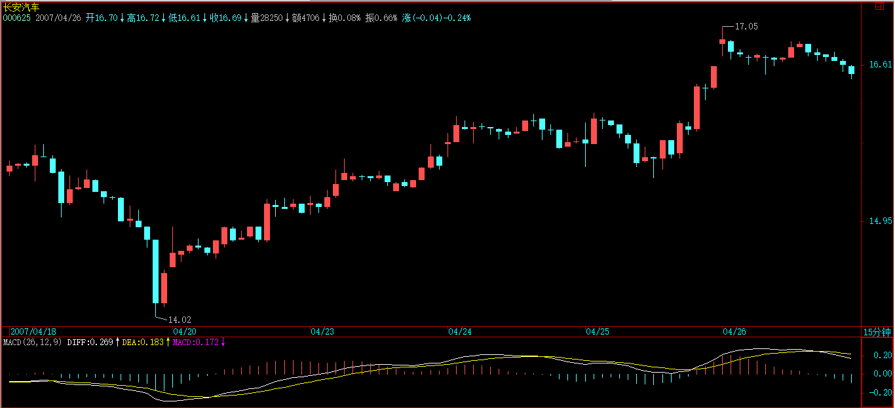
【韶山映山红】大级别决定小级别。即使在5分钟图上也看不出什么来。】
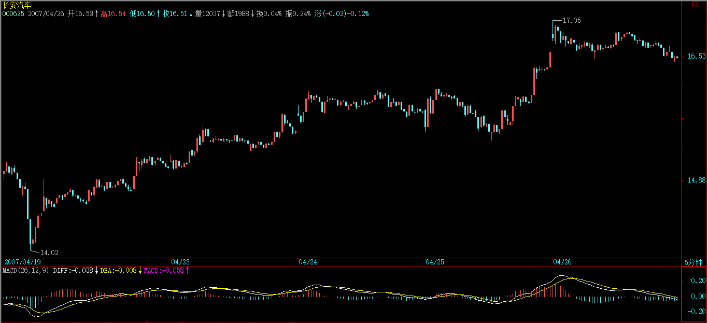
【韶山映山红】1分钟的线段划分图。MACD模拟15分钟级别的。】
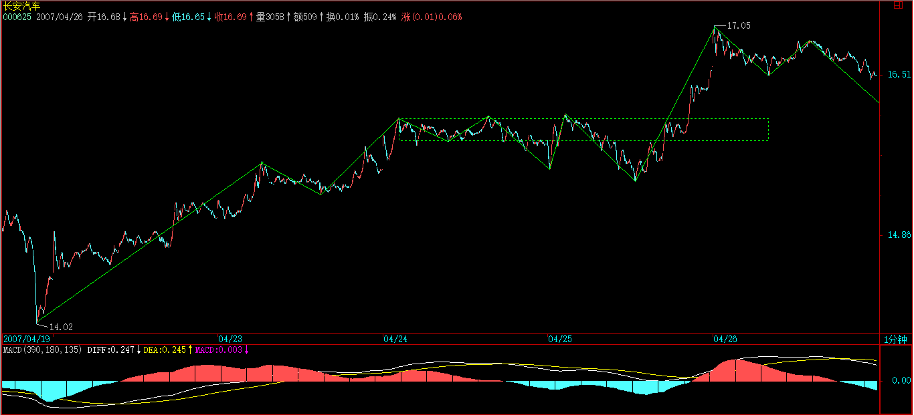
2007-4-26 21:40
[匿名] 新年好 2007-04-26 21:31:35
缠姐把今天中枢给我讲讲吧，我仔细看了看还是看不出来，我看今天是在一个大中枢里震荡，但是中枢上沿和下沿怎么确定啊
==
不是今天的中枢，是04.24 09:35开始的中枢。
2007-4-26 21:41
[匿名] 笨笨 2007-04-26 21:34:22
姐姐要注意身体啊,5.1怎么安排呢
==
什么都不安排就是最好的安排，24小时，任何时刻，想干什么就干什么。
2007-4-26 21:44
[匿名] 后知后觉 2007-04-26 21:32:23
禅主好，您终于来了。今天的问题，希望没有为难到你，我想让您分析600198，关于盘面之外的东西最好。这不是14支里的，希望您知无不言，不吝赐教！谢了！
【韶山映山红】600198大唐电信。】
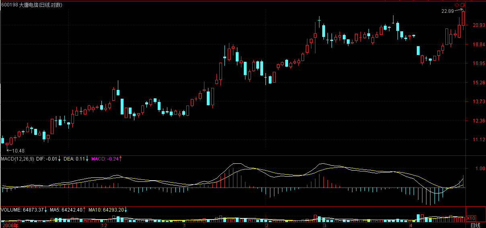
==
这不就是本ID所说那种故意玩伎俩的股票？追高就没【韶山映山红】故意虚报坏业绩。】
必要了，这种股票，要买就在公布坏消息前后买，拉起来就算了。
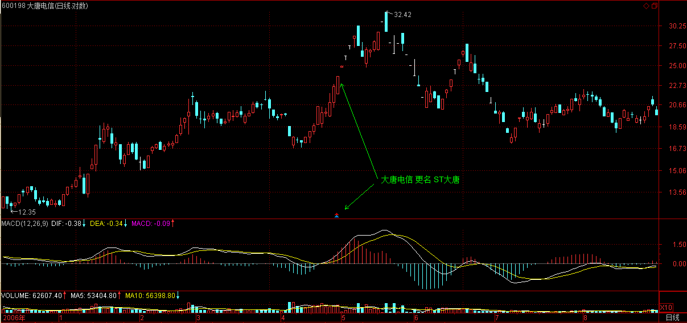
2007-4-26 21:46
[匿名] 笨笨 2007-04-26 21:45:33
姐姐好,两个次级别中枢的波动区间有重叠则扩展为本级别的中枢,那么扩展出来的这个本级别中枢是在这两个有重叠的次级别中枢形成后就完成了还是没完成呢?请姐姐回答
==
怎么会只有两个次级别？相应连接两个次级别的，包含一个第三类买点，所以肯定也是一个次级别，不就已经有了三个次级别？
【韶山映山红】如果两个中枢都是最简单的三段中枢，连接段又只有一个次级别或者次级别以下的走势，那样就只有两个次级别中枢，或者说，凑不出三个次级别中枢。显然，这种情况不是缠师所说的形态。缠师说的连接段包含了第一个中枢的第三类买卖点，而这个离开段不参与第二个中枢的构成。★那么，两个次级别中枢震荡区间重叠而扩张的定义，关注的重点是震荡区间重叠？还是连接段的特殊形态？★以后研究。】
【韶山映山红】严格的说，两个中枢之间不一定包含独立的第三类买卖点。如果把分解组合的三个中枢的中间那个视为三买点所在的中枢，那么它有三种位置：扩张升级的第一个中枢里，扩张升级的第二个中枢里，扩张升级的两个中枢之外。】
【韶山映山红】中枢扩张的最根本的要求：1，两个自然形成、相互独立的同级别中枢。2，,两个中枢的波动区间有重叠。3，能分解组合成三个中枢。4，分解组合的三个中枢有重叠。】
2007-4-26 21:48
[匿名] 漂泊 2007-04-26 21:47:28
禅主晚上好，600601这只您怎么看，总感觉要想上突破，但总又上不去，很是困惑，请禅主指教，谢谢
【韶山映山红】600601方正科技。】
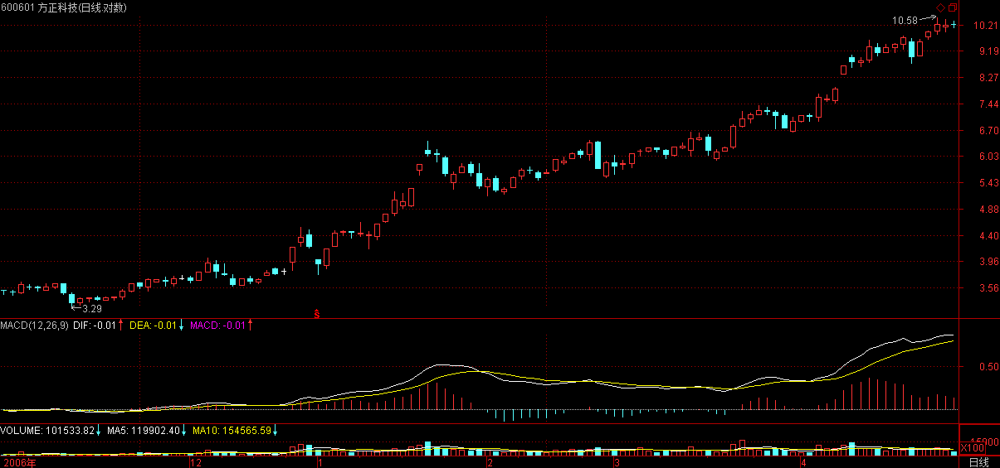
==
这种思维方式是错误的，不要为市场的选择而烦恼，而是要依据市场的选择及时反应。股票是要靠耐心的，今天的文章已经写得很清楚，如果你技术合格，可以用激进的第二钟方式，这种就无须等待盘整，【韶山映山红】不断换股，只在第三类买点买入，一旦形成新中枢就退出。】否则就必须忍受盘整，如果技术好一点，可以利用盘整去降低成本。
先把思维的方式改一下，市场走势没什么可指责的。
2007-4-26 21:54
[匿名] 飞 2007-04-26 21:44:59
明白了谢谢博主!博主明天是否还写多一篇学炒股啊让我们五一好好学习也不去凑旅游的热闹了!嘻嘻好像有些贪心..
==
其实，真正把今天这学好，就不是一天两天能搞清楚的，要真正消化，否则心里有疑问，操作起来一定瞻前顾后。
2007-4-26 21:58
[匿名] 萝卜白菜 2007-04-26 21:30:39
请缠主帮忙看一下:600201金宇集团 高位也就是今天和昨天的换手率都在14%以上,是怎么回事,是开始出货了吗?我看不懂,我点害怕,请缠主指点谜津.谢谢!
【韶山映山红】600201金宇集团，2015-12-30变更为生物股份。】
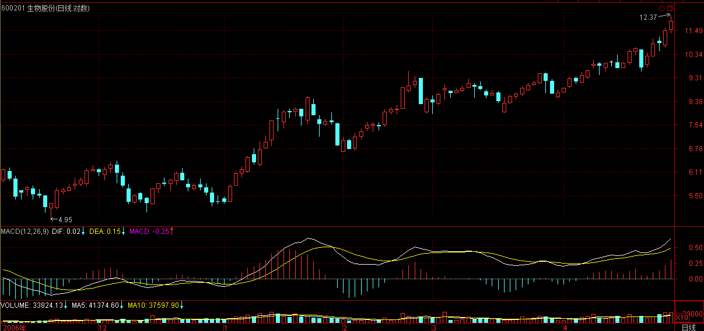
==
这些概念都是无聊的，天天都有人出货，也有人买货，否则哪里来成交？
关键是看走势本身，还有你自己的操作级别，如果你是1分钟的操作级别，几乎天天都有要卖出的时候。
如果你是日线的操作级别，那现在有背驰吗？
2007-4-26 22:04
[匿名] 股虱 2007-04-26 22:03:39
一个上涨周期，在形成两个中枢后继续上涨，如不出现背驰，再次出现新的中枢，然后接着上涨，这时判断背驰的条件，是否也要看：1、最后一个中枢把MACD黄白线拉向0轴；2、最后一段上涨的力度小于其前一个上涨的力度。
以a＋A＋b＋B＋c＋C＋d为例，在最后一个中枢C把黄白线再次拉回0轴，d的力度小于c则背驰
==
顺序刚好颠倒了，是首先要选择好比较哪两段，然后再参考MACD来比较力度。
至于选择是30分钟还是5分钟的MACD，其实道理是一样的，只是方便程度不同。
MACD是辅助判断力度的，而不是单独有一个条件2去判断力度。
2007-4-26 22:11
[匿名] christine 2007-04-26 22:09:47
缠姐姐，请教一下：站在大级别的年市的前提下，我们降低成本与赚取更多筹码是否可以更激进些？譬如现在看好某几只或者某只股票，现在开始有机会就先赚筹码，赚他个N多，然后等到该股票价格翻到一定程度时，再抛掉50%（或者80%等），这样做是不是盈利更快？另外在底部赚筹码成本也低些？毕竟我是小散，投入股市的钱也不会上千万更不会上亿。不会筹码赚着赚着赚成大股东的。
==
开始先降低成本，成本低了，持有的心态自然好，
操作不能把基础放在假设上，而是无论任何情况，都可以自如应对。【韶山映山红】假设是个大级别的牛市。假设是个大牛股。假设能卖在高点。】
2007-4-26 22:14
匿名] 走失的爱犬 2007-04-26 22:09:32
缠姐，你精神很好吗。我看了两天的球。白天还好看股票。呵呵，头都快炸了：）
==
没问题，关键子时前一定要入睡，这样就算2点45起来，影响也不太大。
2007-4-26 22:16
[匿名] 同龄人 2007-04-26 21:59:36
美眉的文章每天都看,就象看英超!
==
明年看英超要收费，而本ID这里是永远免费，怎么能就象？
2007-4-26 22:17
[匿名] yaa 2007-04-26 22:22:09
再发。
缠ＪＪ，你好，问一个问题。不知你对一些所谓的Ｌｅｖｅｌ２的行情软件有何看法？据说可以看到详细的分笔数据。缠中说禅的理论是否能发挥更大的作用呢？
==
其实根本不需要精确到分笔，分笔的背驰就用1分钟的柱子面积比较就可以。就算看不到1分钟的，用5分钟的柱子面积比较发现1分钟的背驰。实际的操作，关键是看好各级别的相关性，而不是去究些太细节的东西。【韶山映山红】多级别联立。】
如果要看细节的东西，可以看盘口语言，有心人可以去观察，各级别见顶见底时的盘口语言变化，这更有意义。【韶山映山红】盘口语言。可以做个专题，以后研究。】
2007-4-26 22:27
闰秒如云 2007-04-26 22:15:18
博主好。有趣的问题：缠中说禅理论可以用在彩票上吗？如果可以，5100万资金级别应该如何操作呢？小资金又当如何操作呢？
==
不可以，不符合本ID理论成立的两个前提。
2007-4-26 22:30
快子时了，本ID必须休息，问题太多，回答不到的请原谅。
先下，再见。
2007-4-26 22:31
本课目录
教你炒股票49：利润率最大的操作模式